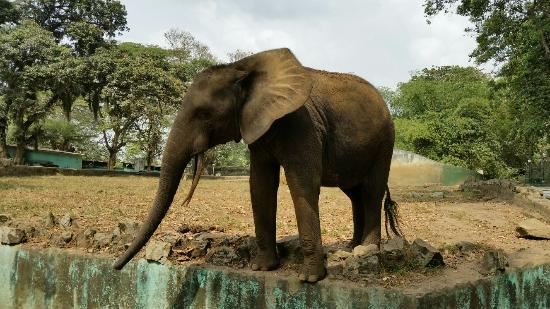
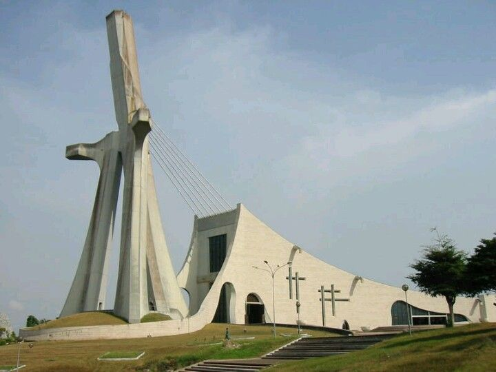
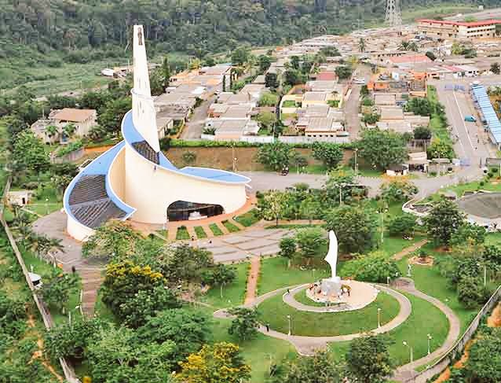
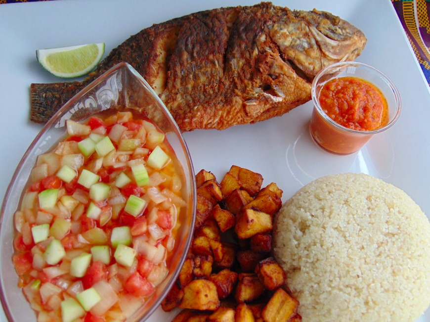

Zoo Nationale d'Abidjan
Le Zoo National d’Abidjan. Le Zoo National d’Abidjan est devenu depuis 1972, un établissement public et est sous tutelle du Ministère de l’Environnement, des Eaux et Forêts. Cette aire protégée située dans la commune de Cocody s’étend sur une superficie d’environ vingt (20) hectares dont quatre 4 sont exploités.

Cathédrale Saint-Paul d'Abidjan
Cette cathédrale a été bâtie par l'architecte italien Aldo Spirito, à Abidjan à l'initiative du président Félix Houphouët-Boigny. La première pierre de cette cathédrale a été bénie le 11 mai 1980 par le pape Jean-Paul II à l'occasion de sa première visite pastorale en Côte d'Ivoire . Il a également consacré l'édifice achevé le 10 août 1985 lors d'une seconde visite dans ce pays . Le coût de réalisation de cette œuvre architecturale est estimé à 6 milliards de francs CFA .

SANCTUAIRE MARIAL D'ABIDJAN
Le Sanctuaire Marial a déjà sa petite histoire: celle d’être le Sanctuaire dont un Pape aura béni la première pierre et « suggéré » l’appellation. En mai 1980, le pape Jean-Paul II visite la Côte d’Ivoire pour la première fois et bénit à cette occasion, la première pierre de la future cathédrale Saint-Paul et celle du futur Sanctuaire Marial. Il propose même d’appeler celui-ci « Notre Dame d’Afrique », voulant ainsi, au terme de sa première visite sur le continent, consacrer l’Afrique à la Vierge Marie.

L'ATTIEKE
L’attiéké est la célèbre semoule de manioc surnommée “couscous de Côte d’Ivoire”. C’est un plat à base de manioc qui fait partie intégrante de la cuisine ivoirienne en Afrique. L’attiéké est préparé à partir de pulpe de manioc fermentée qui a été râpée ou granulée.
